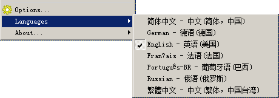

| 专家包多语言 |
专家包多语言
CnPack IDE 专家包内置多语言界面，您可以在 Languages 菜单中切换界面语言。切换后，专家包自身的菜单、对话框、提示信息等界面文本会即时生效。

当前版本支持以下七种语言：
简体中文（Chinese Simplified）
繁体中文（Chinese Traditional）
English（英语）
Deutsch（德语）
Fran?ais（法语）
Português（葡萄牙语）
Русский（俄语）
通常建议将专家包界面语言设置为与开发团队日常使用一致的语言，以便更高效地阅读提示、配置项和帮助信息。
操作步骤
打开 Delphi IDE 主菜单中的 CnPack -> Languages。
选择目标语言即可。
相关链接